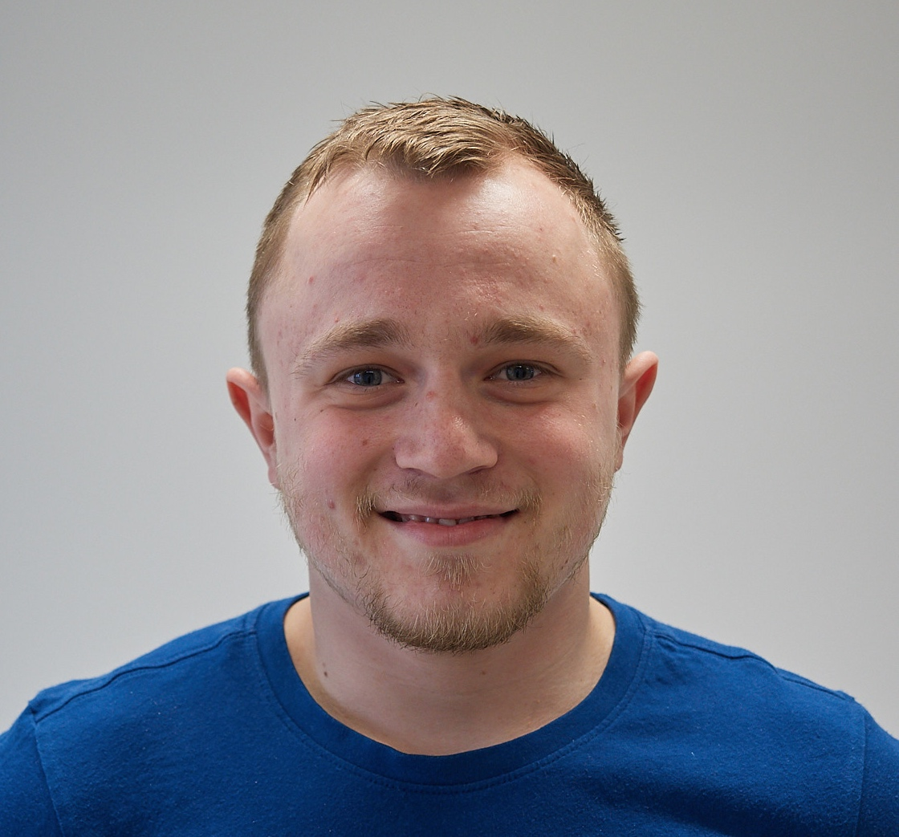

I am a self-motivated and driven software developer, seeking a fulfilling career change into a full stack software development
role following my graduation from CodeClan in July 2018. The course has predominantly given me exposure to JavaScript, Java
and Ruby and sparked a keen passion for every day learning and challenges. I’m now looking to continue my development by
learning more software languages and frameworks. Software development has focused my passion for problem solving and overcoming
user/customer problems as well as writing clean, robust and maintainable code. I’m intrigued by technology, curious about
machine learning and enjoy attending Glasgow tech-meet ups as often as I can.